About Me
Hey there! I'm Rachit. I'm currently in my first year at IIIT-H. It's a rigorous environment, but I enjoy being surrounded by people who are deeply invested in what they build. I enjoy the process of coding late into the night and discussing ideas that range from systems design to philosophy.
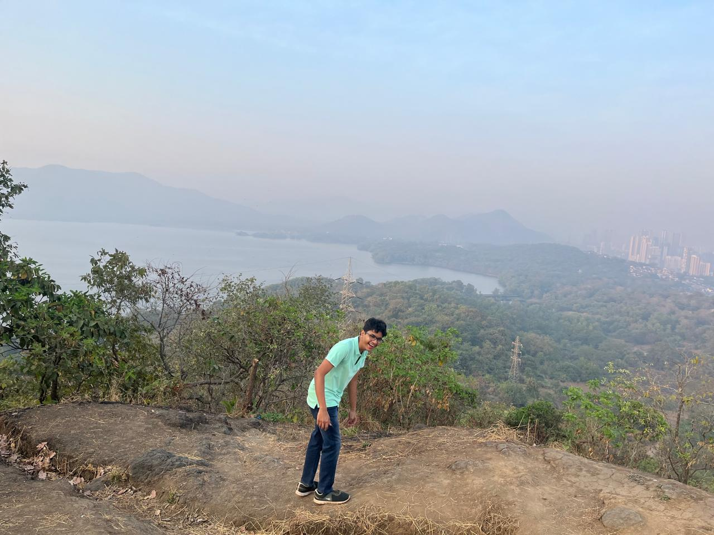
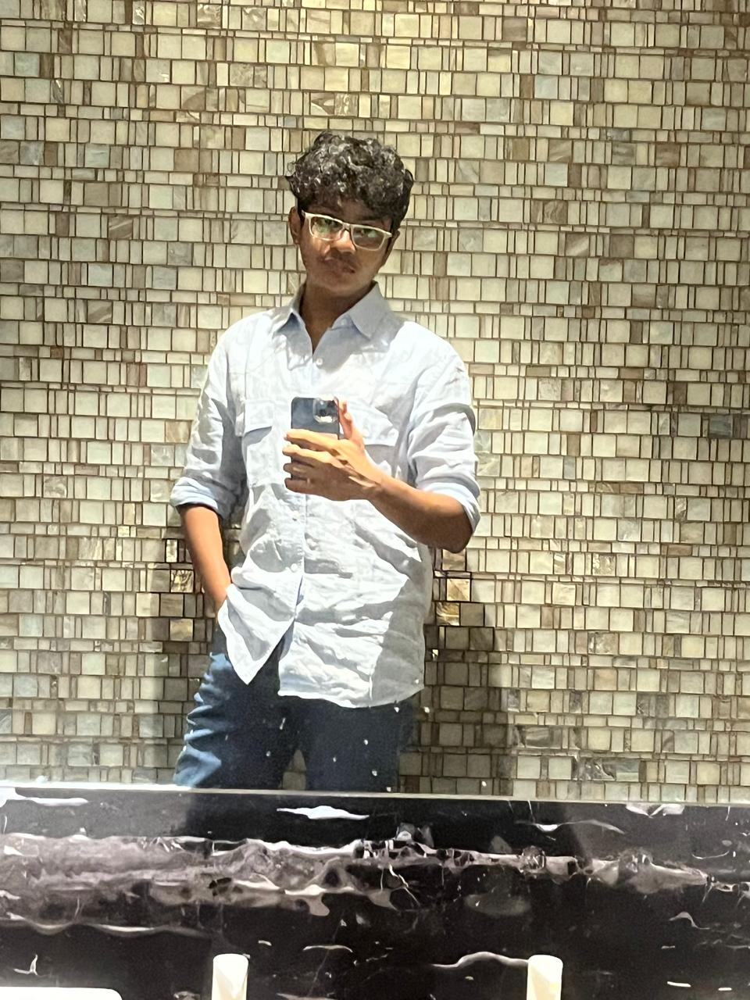
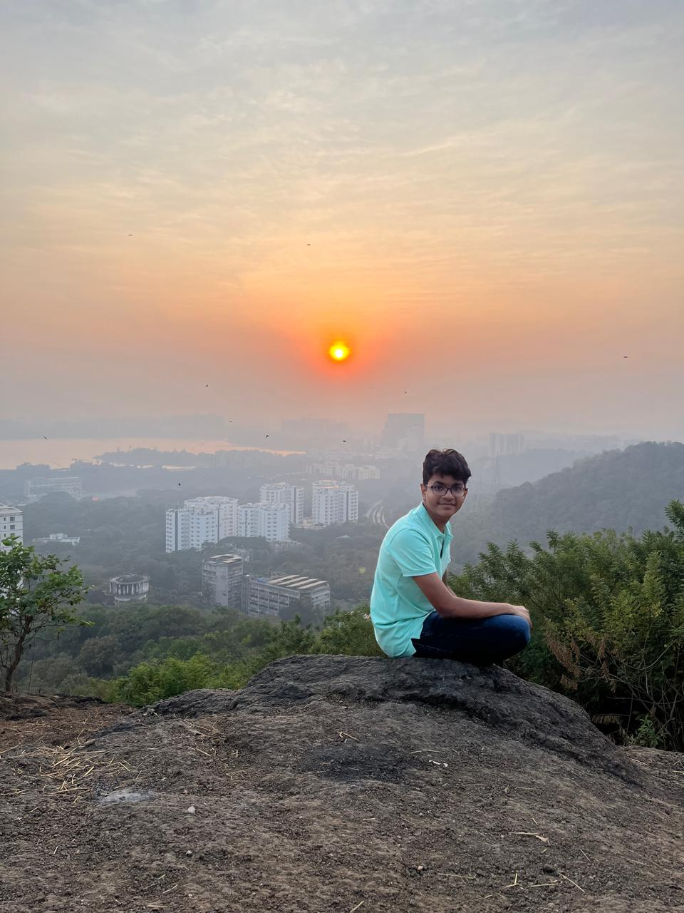
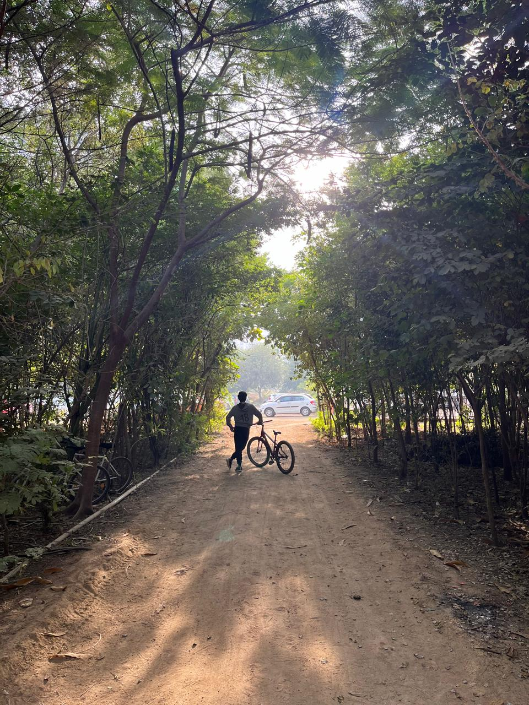
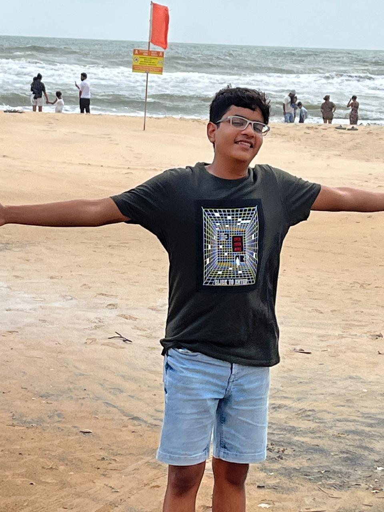
What makes me tick
I'm endlessly curious about how things work beneath the surface. You'll find me tinkering with computers, working through mathematical problems, or having conversations with people about their different life experiences.
Things I enjoy:
- Cricket (18 = ❤️)
- Basketball & table tennis
- Debugging and systems programming
- Exploring new places and meeting different people
Current Hobbies:
- Learning the ukulele
- Shooting hoops
- Table tennis
- Reading
Book Shelf
A good book beats everything. Some that have shaped my thinking:
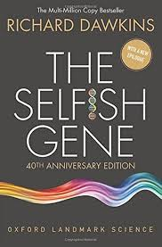
The Selfish Gene (Dawkins)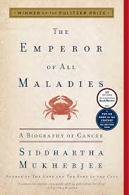
The Emperor of All Maladies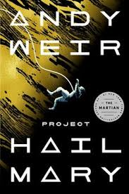
Project Hail Mary (Weir)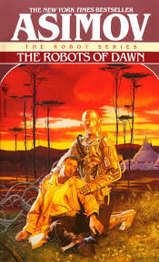
Asimov's Robot series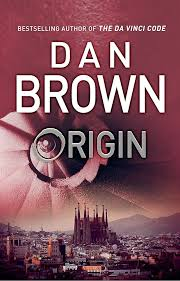
Origin (Brown)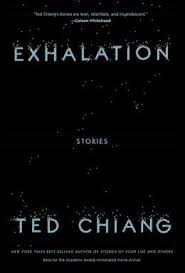
Exhalation (Ted Chiang)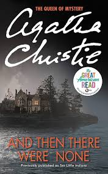
Agatha Christie's mysteries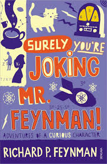
Surely You're Joking , Mr.FeynmanWhile I've lived my entire life in Ghatkopar, Mumbai, Hyderabad (especially IIIT) has quickly become my second home. The campus culture and the workload push me to be better every day.
Education
P.G. Garodia School
Typically studious until 8th grade. Enjoyed the Math Olympiad (scored 5/100 at regional level - a humbling but fun experience).
I enjoyed solving good math problems more than rote memorization.
Early Exploration
During the lockdown, I started exploring coding seriously—running Python scripts, building with pygame, using p5.js, and creating a simple database for my Dad's company.
PACE Mumbai
Focused on JEE preparation. It was an intense two years of Physics, Chemistry, and Math that helped refine my problem-solving speed and discipline.
IIIT-Hyderabad
Scored 99.9 in JEE Mains and joined CSE. Currently working through UG1, balancing core CS subjects with lab assignments and self-study.
Technical Playground
Here's what I'm comfortable working with so far:
Languages
Web Development
Databases
Other
Interests & Self Study
Topics I am exploring outside of my regular coursework:
Deep Learning Foundations
I'm currently following Andrej Karpathy's "Zero to Hero" series to understand Neural Networks from the ground up, starting with Micrograd and moving toward building GPT-style transformers.
Ray Tracing
I've been working on a Ray Tracer to understand computer graphics. This involves working directly with PPM image formats to manipulate pixel values and simulating light physics.
Implemented rendering logic for different materials (diffuse, metal) and calculated ray-object intersections mathematically.
Projects
Inventory Management System
A functional inventory management system built for a small company using Express.js.
Database Analysis Project
Designed a large-scale database in MySQL for a course project, implementing proper schema analysis and complex queries.
Sales Tax Calculator
A simple CLI tool for business tax calculations, replacing manual spreadsheet work.
Coding Experiments
My CV
For more details on my background, you can download my CV here: